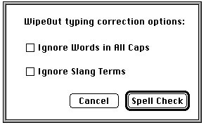

Legacy Document
Important: The information in this document is obsolete and should not be used for new development.
Important: The information in this document is obsolete and should not be used for new development.


Creating Dialog Boxes
To create a dialog box, use theGetNewDialogorNewDialogfunction. You should usually useGetNewDialog, which takes information about the dialog box from a
dialog ('DLOG') resource in a resource file. Like window resources, dialog resources isolate descriptive information from your application code for ease of modification
or translation to other languages. The rest of this section describes how to useGetNewDialog. Although it's generally not recommended, you can also use theNewDialog or NewColorDialogfunction and pass it the necessary descriptive information in individual parameters instead of using a dialog resource. See page 6-118 for a description ofNewDialog andpage 6-115 for a description ofNewColorDialog.The
GetNewDialogfunction creates a data structure (called a dialog record) of typeDialogRecordfrom the information in the dialog resource and returns a pointer to it. A dialog record includes a window record. When you useGetNewDialog, the Dialog Manager sets thewindowKindfield in the window record todialogKind. As explained in "Displaying Alert and Dialog Boxes" beginning on page 6-61, you can use this pointer with Window Manager or QuickDraw routines to display and manipulate the dialog box.When you use
GetNewDialog, you pass it the resource ID of the dialog resource, an optional pointer to the memory to use for the dialog record, and the window pointerPointer(-1), which causes the Window Manager to display the dialog box in front of all other windows.If you pass
NILfor the memory pointer, the dialog record is allocated in your application's heap. PassingNILis appropriate for modal dialog boxes and movable modal dialog boxes, but--if you are creating a modeless dialog box--this can cause your heap to become fragmented. In the case of modeless dialog boxes, therefore, you should allocate your own memory as you would for a window; allocating window memory is described in the chapter "Window Manager" in this book.Here's an example of how to create the dialog box shown in Figure 6-12.
VAR theDialog: DialogPtr; theDialog := GetNewDialog(kSpellCheckID, NIL, Pointer(-1));Figure 6-12 A simple modal dialog box
This example uses an application-supplied constant (
kSpellCheckID) to specify the resource ID number of a dialog resource. Listing 6-4 shows how this dialog resource appears in Rez input format.Listing 6-4 Rez input for a dialog resource
resource 'DLOG' (kSpellCheckID, purgeable) { /*dialog resource*/ {62, 184, 216, 448}, /*rectangle for dialog box*/ dBoxProc, /*window definition ID for modal dialog box*/ visible, /*display this dialog box immediately*/ noGoAway, /*don't draw a close box*/ 0x0, /*initial refCon value of 0*/ kSpellCheckDITL, /*use item list with res ID 400*/ "Spellcheck Options", /*title if this were a modeless dialog box*/ alertPositionParentWindow /*place over document window*/ };The dialog resource contains the following information:
In the example, a rectangle with coordinates (62,184,216,448) specifies the dimensions of the dialog box, and the
- a rectangle, given in global coordinates, that determines the dialog box's
dimensions and, optionally, position; these coordinates specify the upper-left
and lower-right corners- the window definition ID, which specifies the window definition function and variation code for the type of dialog box
- a constant (either
visibleorinvisible) that specifies whether the dialog box should be drawn on the screen immediately- a constant (either
noGoAwayorgoAway); usegoAwayonly to specify a close box in the title bar of a modeless dialog box- a reference value of type
LongInt, which your application may use for any purpose- the resource ID of the item list resource for the dialog box
- a text string used for the title of a modeless or movable modal dialog box
- as an option, a constant (either
alertPositionParentWindow,alertPositionMainScreen, oralertPositionParentWindowScreen) that tells the Dialog Manager how to position the dialog box (available only to applications running in System 7)
alertPositionParentWindowconstant causes the Dialog Manager to place the dialog box just below the title bar of the user's document window. If you don't supply a positioning constant, the Dialog Manager places the dialog box at the global coordinates you specify for the dialog box's rectangle. Positioning constants for dialog boxes are explained in "Positioning Alert and Dialog Boxes" beginning on page 6-62.In the example, the
dBoxProcwindow definition ID is used. Use the following window definition IDs for specifying dialog box types:
Window definition ID Dialog box type dBoxProc Modal dialog box movableDBoxProc Movable modal dialog box noGrowDocProc Modeless dialog box In each case, the Dialog Manager uses the Window Manager to draw the appropriate window frame. Figure 6-6 on page 6-9 shows an example of a modal dialog box drawn with the
dBoxProcwindow definition ID, Figure 6-7 on page 6-11 shows an example of a movable modal dialog box drawn with themovableDBoxProcwindow definition ID, and Figure 6-8 on page 6-11 illustrates a modeless dialog box drawn with thenoGrowDocProcwindow definition ID.Listing 6-4 specifies the
visibleconstant so that the dialog box is drawn immediately. If you use theinvisibleconstant, the dialog box is not drawn until your application uses the Window Manager procedureShowWindowto display the dialog box.Use the
goAwayconstant only with modeless dialog boxes. For modal dialog boxes and movable modal dialog boxes, use thenoGoAwayconstant, as shown in the example.Notice that because the example does not make use of the reference constant, 0 (
0x0) is provided as a filler. However, you may wish to make use of this constant. For example, your application can store a number that represents a dialog box type, or it can store
a handle to a record that maintains state information about the dialog box or other window types, as explained in the chapter "Window Manager" in this book. You can use the Window Manager procedureSetWRefConat any time to change this value in the dialog record for a dialog box, and you can use theGetWRefConfunction to determine its current value.Listing 6-4 uses an application-defined constant that specifies the resource ID for the item list. The next section, "Providing Items for Alert and Dialog Boxes," describes how to create an item list.
Supply a text string in your dialog resource when you want a modeless dialog box or a movable modal dialog box to have a title. You can specify an empty string for a title bar that contains no text. The example specifies the string "Spellcheck Options" for code readability but, because the example creates a modal dialog box, no title bar is displayed.
You can let the Dialog Manager automatically locate the dialog box according
to three standard positions. Listing 6-4 on page 6-23, for example, specifies thealertPositionParentWindowconstant to position the dialog box over the
document window where the user is working. For details on these standard positions, see "Positioning Alert and Dialog Boxes" beginning on page 6-62.